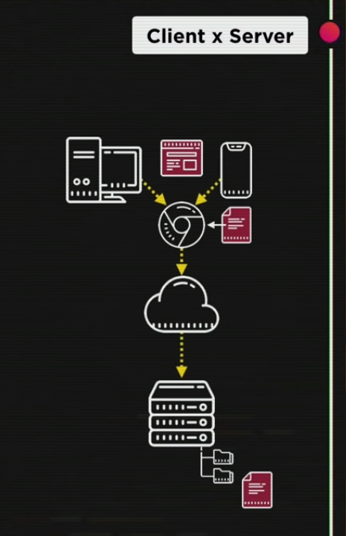
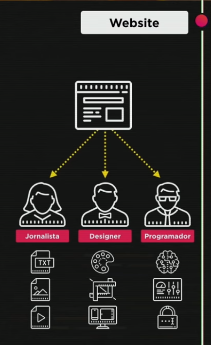
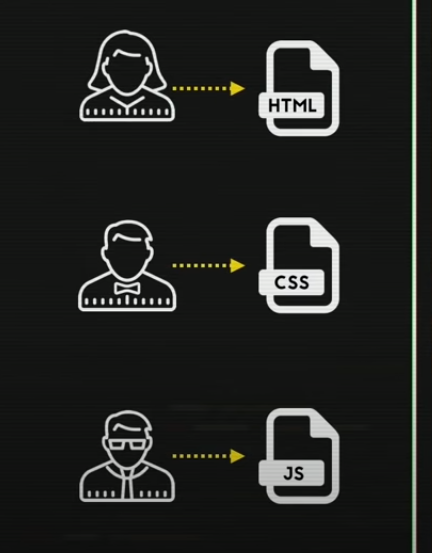
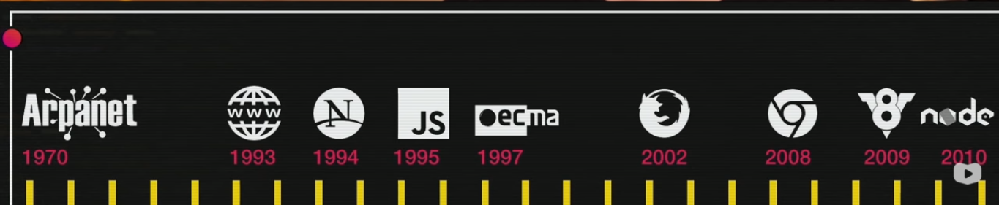
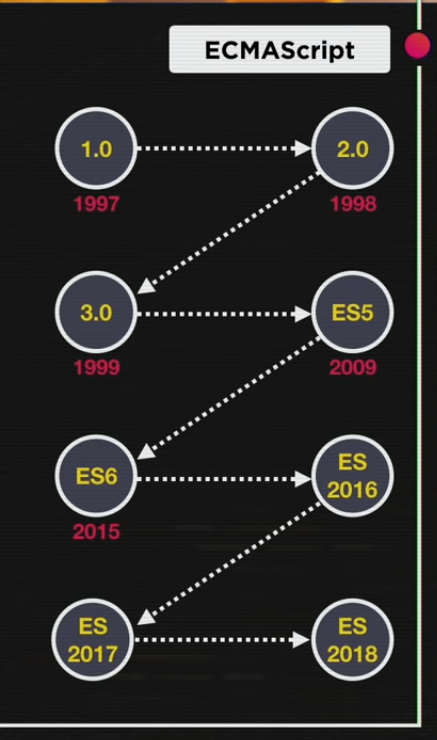
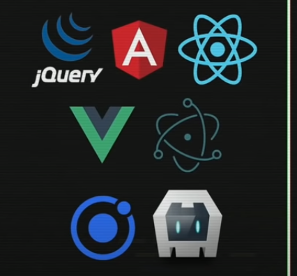
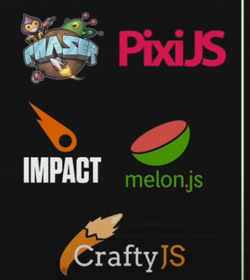

Aula 01
O que faz o Javascript?
Client x Server
Os clientes são os equipamentos finais que o usuário utiliza. Ex.: Celular, Computador. Já os Servidores são os locais de onde se retiram os dados quando o cliente está utilizando algum local específico na internet. Ex: Para ver um vídeo no Youtube, nosso celular (cliente) está retirando informações dos Servidores do Youtube.
A comunicação entre cliente e servidor é feita por meio dos cahmados browser ou navegadores. Quando o cliente acessa uma url específica, o navegador encaminha o endereço para a infraestrutura da internet, que responde para qual servidor o cliente será direcionado.
O servidor funciona como um SO, ou seja, possui pastas e dentro das mesmas, arquivos. Estes arquivos são duplicados pelo servidor e uma cópia é enviada para o cliente. Essa cópia é apresentada pelo navegador, que faz a leitura e interpreta os efeitos visuais do arquivo.
Desse modo, o JavaScript surgiu como uma tecnologia para clientes. Hoje ele funciona até mesmo em servidores, mas focaremos nessa tecnologia para uso em navegadores.
Website
Do lado do cliente, o Website, na maioria das vezes, é composto por três tecnologias: HTML, CSS e Javascript.
Para entender o Website, pode-se fazer uma analogia com a construção de um jornal. A jornalista escreve o conteúdo e seleciona as imagens, o designer cuida da estilização e do embelezamento, para tornar o jornal atraente, e o programador cuida da infraentrutura (onde entregar mais jornal), como será o transporte do mesmo. Este último determina a dinâmica do trabalho.
Para fazer a relação entre o jornal e as três tecnologias, a jornalista será o HTML, que determina a estrutura (esqueleto) da página Web. O designer seria o CSS, que dá a estilização para a página. E o programador, o JavaScript, que impõe a dinâmica e interação do site.
Não dizemos que "programamos em HTML e CSS", pois estas tecnologias não são linguagens de programação. Diferente do que ocorre com o JavaScript, que é uma linguagem de programação e podemos dizer que "programamos em JavaScript".
Quem usa JavaScript?
Grandes empresas usam o Javascript, dentre elas o Google, Youtube, Linkedin, NETFLIX, Facebook, Amazon e muitos outros.
O JavaScript é tão importante que um teste rápido nos sites dessas empresas, desabilitanto o Javascript, nos mostra como o mesmo é sem essa linguagem.
Aula 02
Como chegamos até aqui?
Histórico do Javascript
Em meados de 1970 surge a internet, no contexto da Guerra Fria. Foi criada pela ARPA, time de pesquisa militar para guerra.Inicialmente, foi chamada de Arpanet.
Já em 1993, em Genebra (mais precisamente no CERN), Tim Benersli cria o HTML, o protocolo http e a World Wide Web (famoso www). Na mesma época, nos EUA, surge o Mosaic, primeiro navegador de internet.
Em 1994, o criador do Mosaic, Mark Hendersen se juntou com Jim Klark para criar a Netscape. Esta empresa criou o navgador que na época se tornou mundialmente o mais utilizado.
Em 1995, Briden Nike, que trabalhava na Netscape, cria o mocca (também chamado de "livescript") ao mesmo tempo que estva surgindo o Java. Como o Java era considerada a linguagem do futuro na época, a Netscape passou a denominar o "livescript" como "JavaScript", em uma jogada de marketing.
Em 1997, para evitar a cópia da linguagem que a Microsoft havia feito em 1995, lançando o Internet Explorer escrito em Javascript, a Netscape buscou um órgão que regulamentasse e padronizasse a sua linguagem. Aí surge o ecma (Associação europeia de fabricantes de computadores), que funciona como o ISO dos EUA.
Em 2002, a briga entre Windows e Netscape se encerrou com a falência da Netscape e fundação da Mozzilla.
Já em 2008, a Google surge com o Chrome. No ano seguinte, implantou o V8, poderoso motor de Javascript do Chrome.
Utilizando o código do V8 modificado, em 2010, surge o NodeJs. Dessa forma, o Javascript passou a ser utilizado do lado do servidor, fora do navegador e apenas para clientes.
O EcmaScript
O ecma é uma versão padronizada do JavaScript que teve sua versão 1.0 em 1997. Em sua versão 6.0 (2015), trouxe os declaradores let e const e as strings em templates. A partir daí, o Ecma passou a ser denominado de acordo com o seu ano: ES2017, ES2018, por exemplo.
Onde o Javascript é usado?
O JavaScript é a linguagem base de outras tecnologias, como o jQuery, o Angular, o ReactJs, o Vue, Electron, Ionic, Córdova.
Ele também é utilizado na construção de games:
Aula 03
Dando os primeiros passos
Bibliografia
- JavaScript - O guia definitivo
- JavaScript - Guia do programador
- Gui de referência mozilla
- Guia de referência ecma